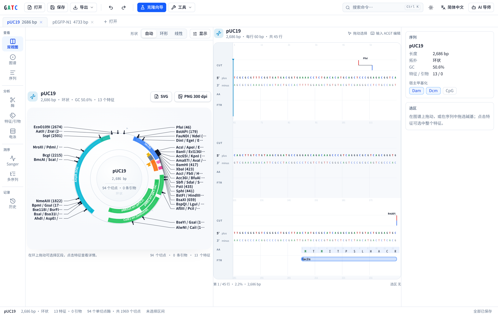
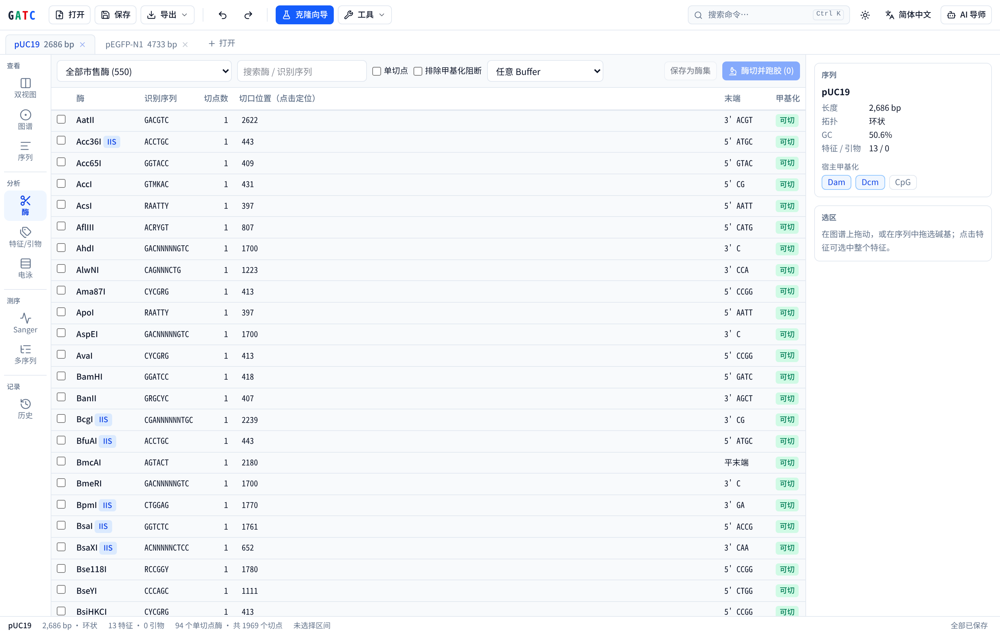
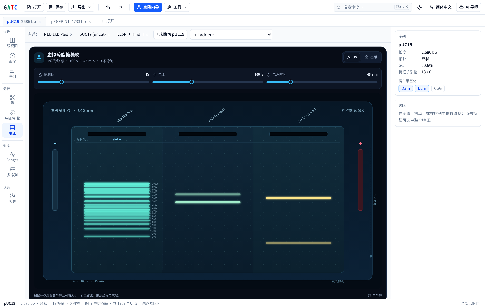
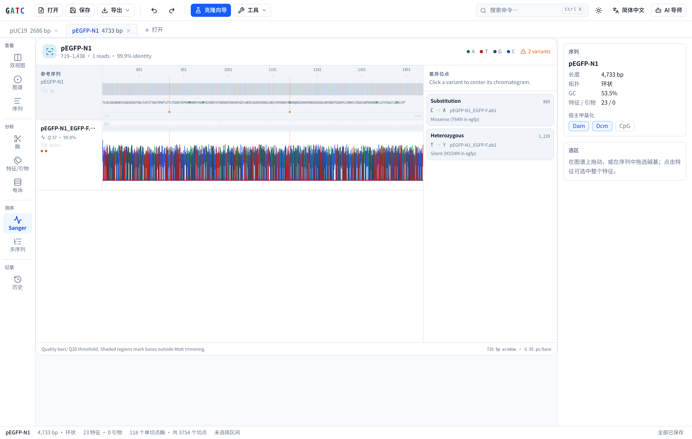
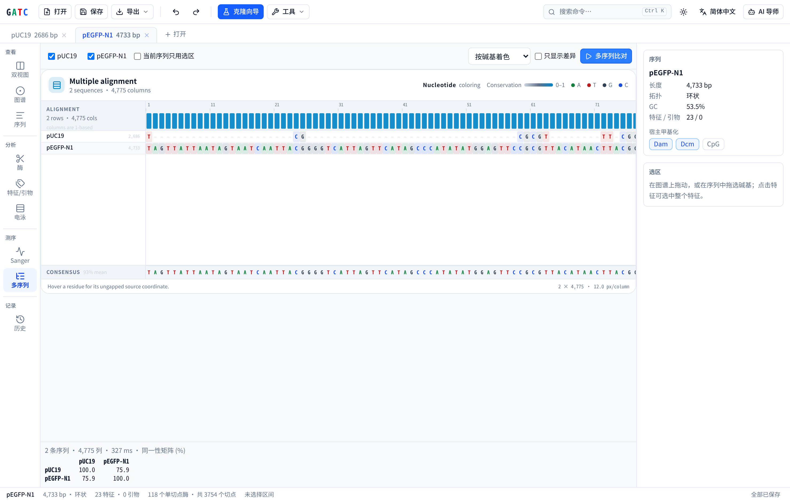
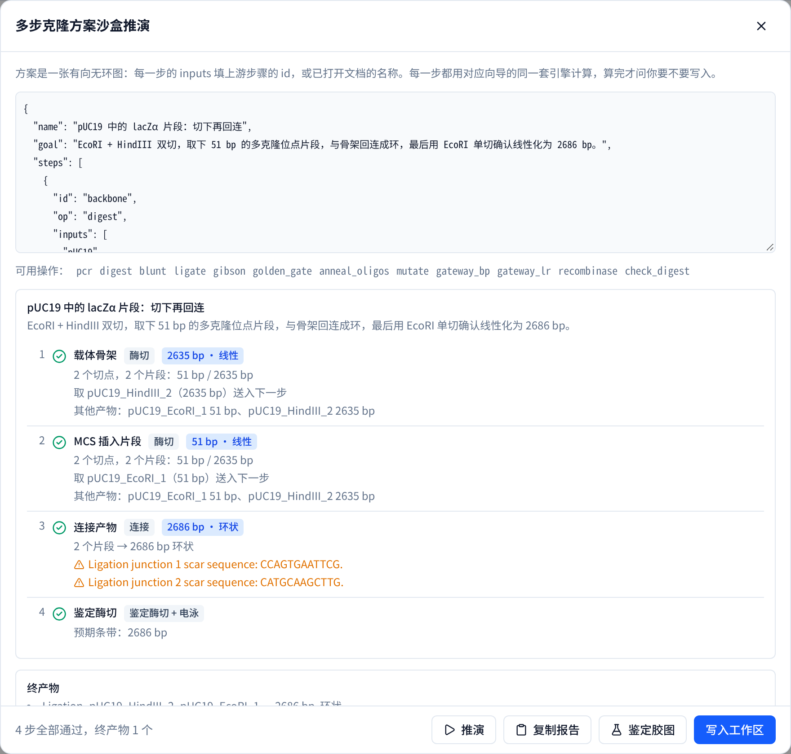

双视图
环形图谱与双链序列并排联动，切点、特征、引物与翻译同屏。
质粒图谱 · 酶切分析 · 克隆模拟 · 引物设计 · Sanger 比对 · 虚拟电泳。
直接读写 SnapGene 的 .dna 文件；计算在浏览器内完成，序列不离开本机。
SnapGene 是 Dotmatics 的商标；GATC 为独立实现，与其无关联。






对照对象为 SnapGene 自己写出的真实文件：SnapGene 质粒库中的 7 个质粒、Biopython 附带的 8 个 SnapGene 测试文件，以及 12 个 Gateway 载体。下表取自 docs/CROSSCHECK.md（2026-10-27）。
| 检查项 | 参照实现 | 结果 |
|---|---|---|
| .dna 导入：序列、拓扑、特征、引物 | Biopython SeqIO + 原始 Features XML | 15 / 15 一致 |
| .dna 导出：写出后再读回 | Biopython SeqIO | 15 / 15 一致 |
| 酶定义 | REBASE（经 Bio.Restriction） | 699 / 699 一致 |
| 切点位置（7 质粒 + 40 kb 随机序列） | REBASE（经 Bio.Restriction） | 5592 / 5592 一致 |
| 引物 Tm（304 条寡核苷酸） | primer3（SantaLucia 1998 + Owczarzy 2008） | 最大偏差 0.00 °C |
| 酶切片段（1–3 种酶） | pydna | 164 / 164 一致 |
| PCR 产物（含 5′ 尾、跨原点） | pydna | 105 / 105 一致 |
| Gateway BP / LR（真实 pDONR、pDEST） | pydna gateway_assembly | 12 / 12、14 / 14 |
| Cre/lox 切除、倒位、整合 | pydna recombinase_assembly | 8 / 8 一致 |
| 双序列比对（全局与局部） | Biopython PairwiseAligner | 10 / 10 分值一致 |